アプリ紹介
複数のHPから情報を収集し、結果をExcelに出力するWindowsデスクトップアプリケーションです。
指定したHP、指定した年月の情報のみを収集します。
結果はAIにより分類され、種別に応じて自動で色付けされます。
使い方
1. 年月の選択
1. 年選択リスト
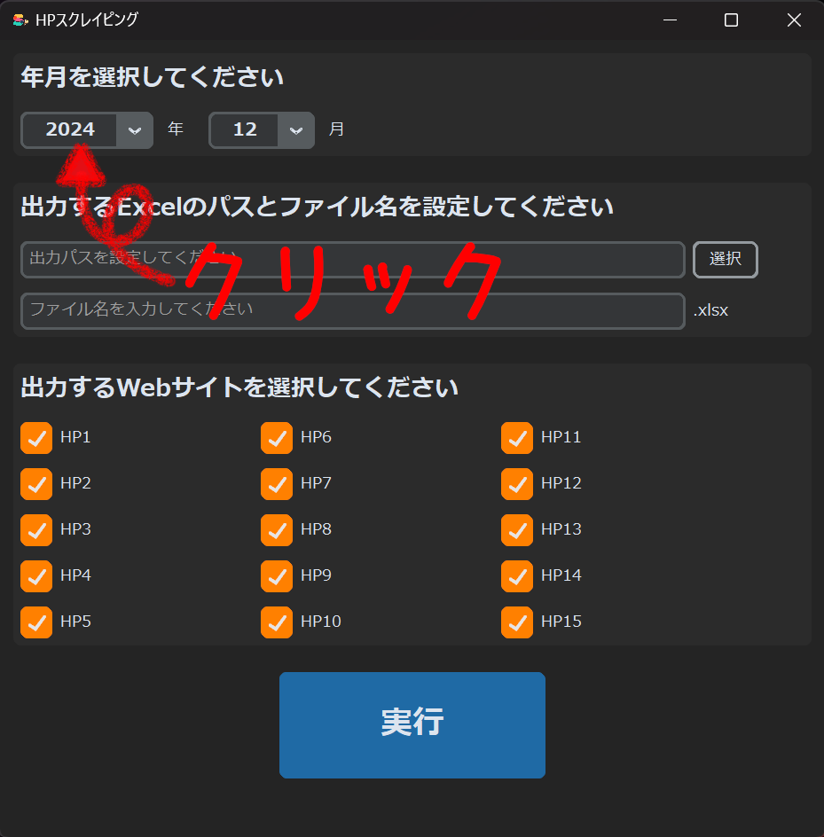
年選択リストをクリックします。
2. 年の選択
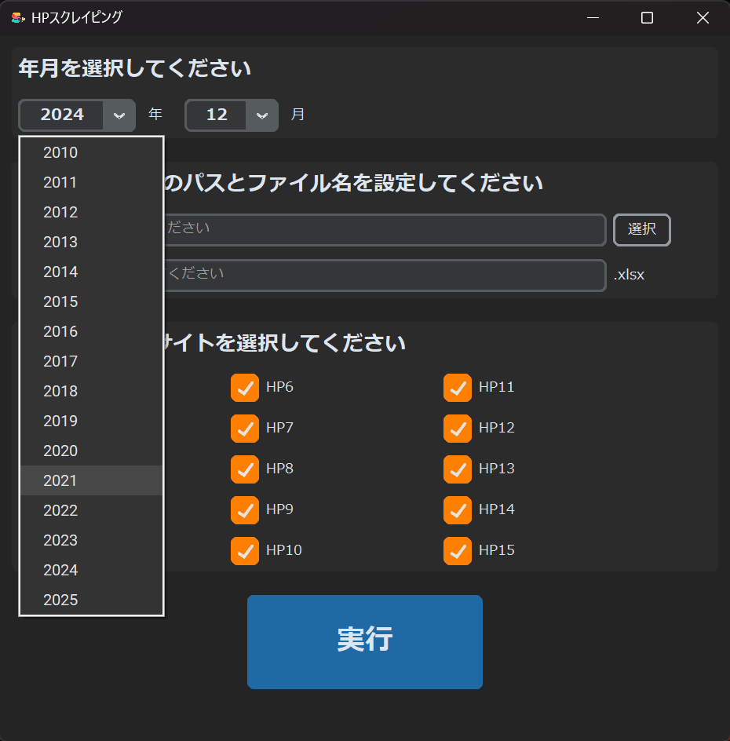
年を選択します。
3. 月選択リスト
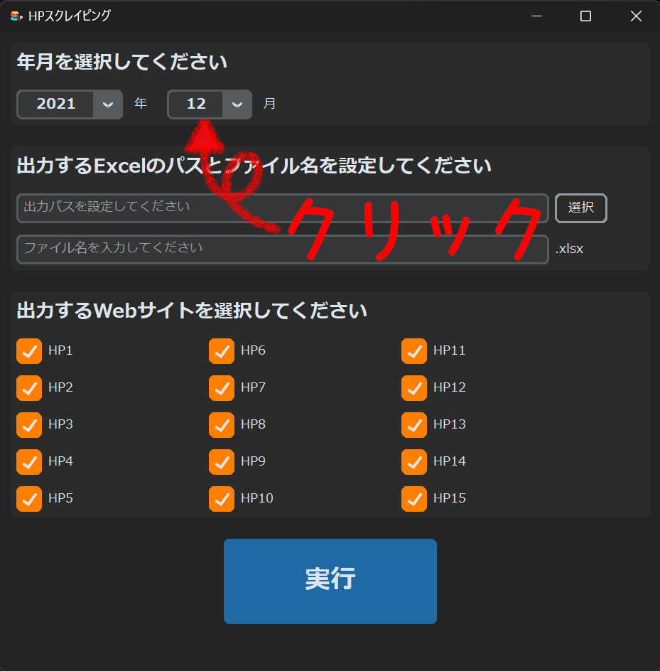
月選択リストをクリックします。
4. 月の選択
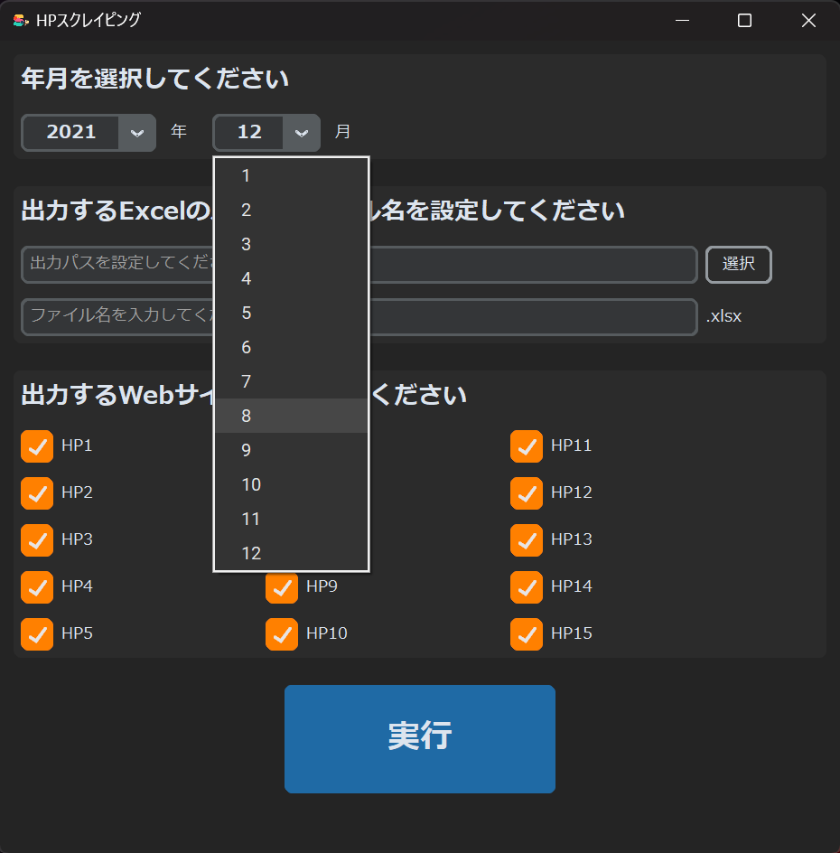
月を選択します。
2. Excelの出力先を設定
1. 出力先選択
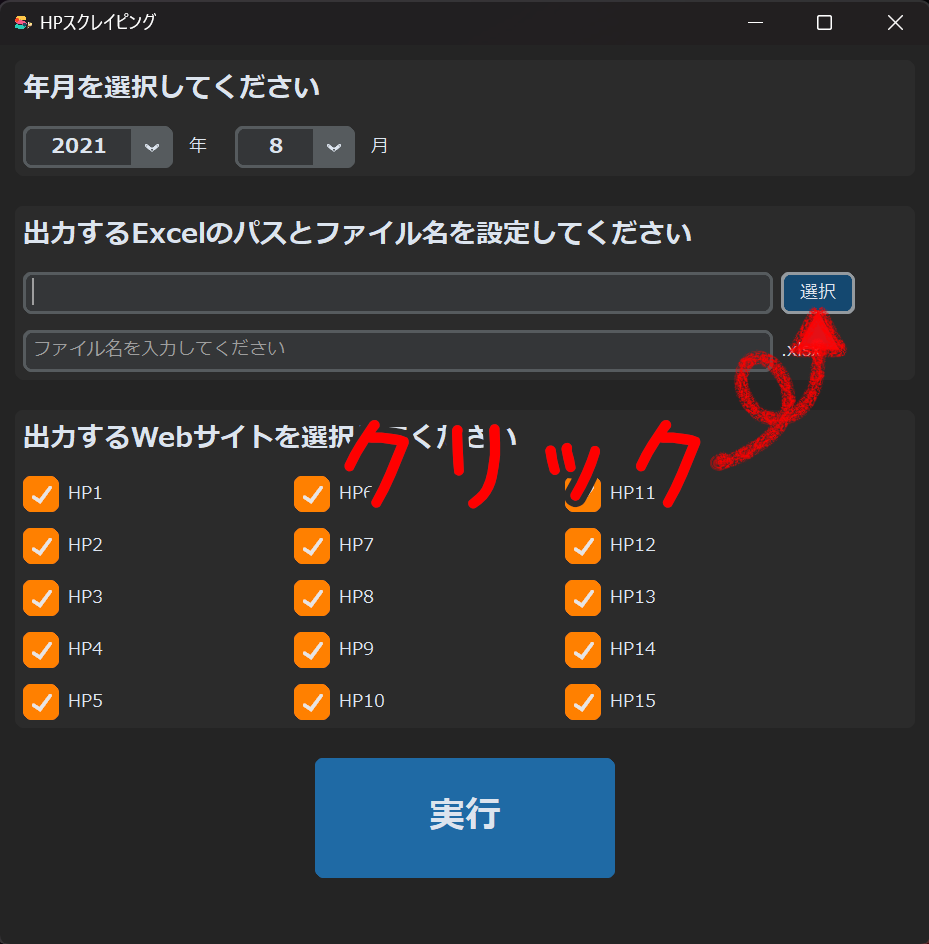
選択ボタンをクリックします。
2. フォルダ選択

フォルダ選択ダイアログが表示されるので、出力先のフォルダを選択し、フォルダの選択ボタンをクリックします。
3. Excel名の入力
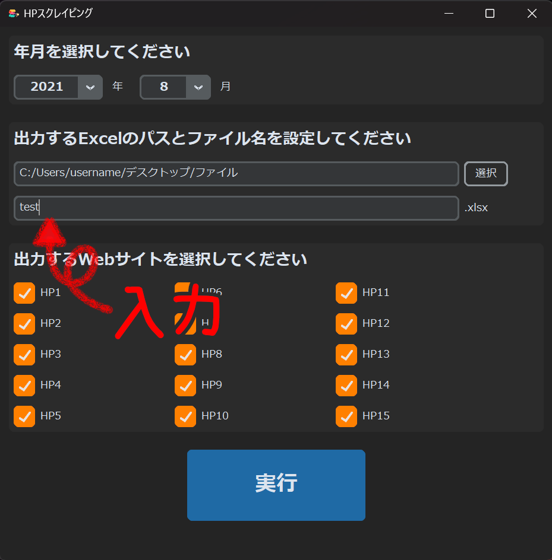
Excel名入力欄に出力するExcelのファイル名を入力します。
3. 出力するHPを選択
1. HPの選択
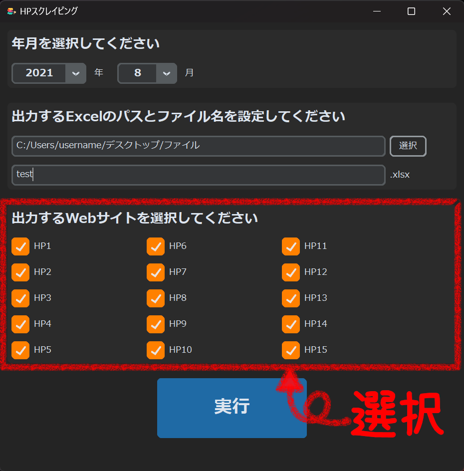
赤枠内のチェックリストをクリックすることで、出力するHPを選択できます。
2. 出力されるHP
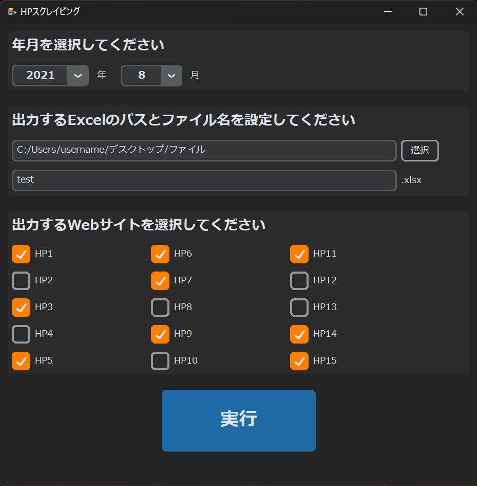
チェックが入っているHPが結果に出力されます。
チェックされていないHPは出力されません。
4.実行
1. 実行
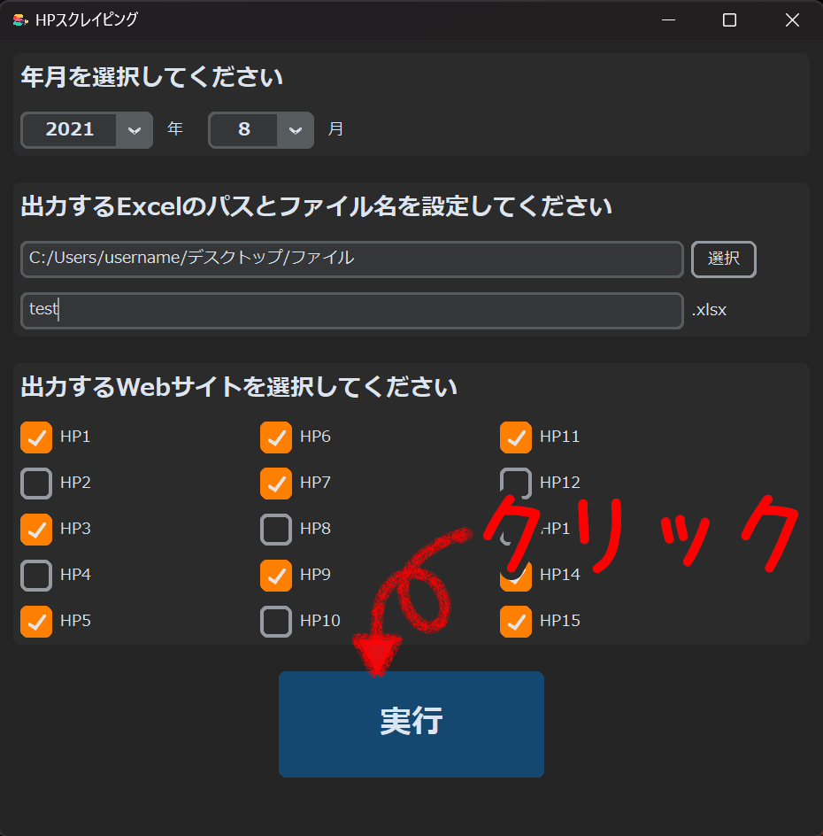
実行ボタンをクリックします。
2. 待機
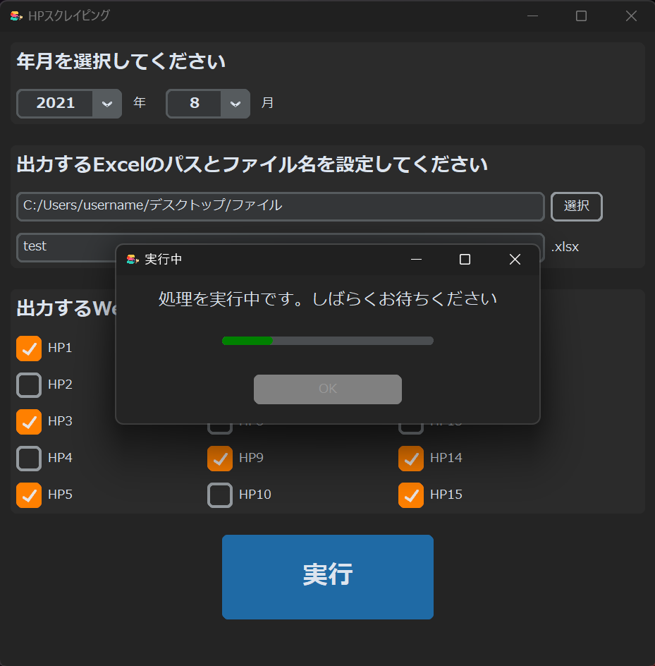
処理が終わるまでしばらく待ちます。
3. 処理完了
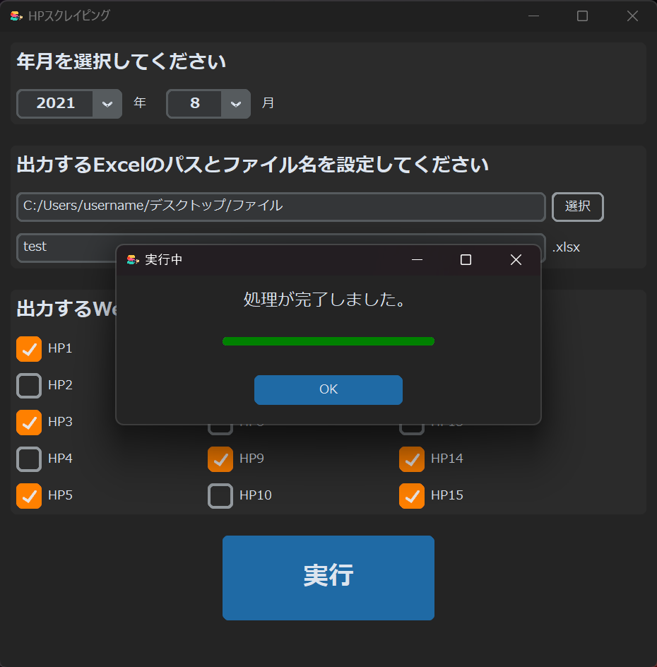
処理が完了すると左図のようになります。
4. 結果の確認
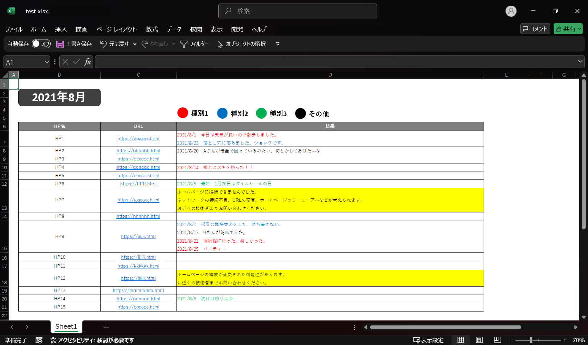
結果は指定した出力パスにExcelデータとして保存されます。
出力されたExcelの結果列はAIにより自動で分類され、分類に応じた文字色が付けられています。
背景色が黄色になっている行はHPの構成変更やネットワーク不良の可能性があることを示しています。
開発環境
Visual Studio Code
Excel
Python
VBA
UI UX考案
UI UX実装
処理実装
その他
1週間